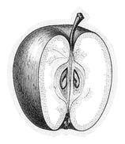

04 / 09 · Product · Core
Be useful first. Charm comes later.
Before a product means something, it has to do something.
At the coffee shop, the product is a good cup, reliably. A beautiful room can’t save a bad cup.
- iWho is it for?
- iiWhat does it help them do?
- iiiWhat one thing must it do well?

Plate 04 · r = 1 · core